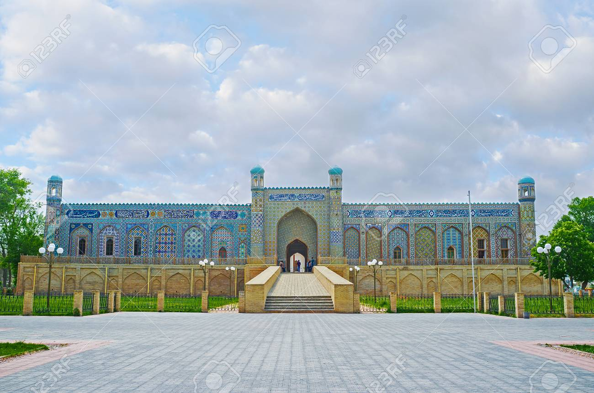

В Ферганской долине вы можете насладиться горными пейзажами, идиллическими озерами и зеленой природой. В Ферганской долине выращивают шелк и вино, здесь выращивают дыни и тыквы. Долина защищена от холодных северных ветров горными хребтами Курамин и Чаткал. Алай и Туркестан сдерживают теплые ветры с юга.

Мечеть Джума
Арабское слово Жоме означает (единица измерения, объединение).
Такие виды мечетей используются для намаза Джумы (пятничной
молитвы). Строительство мечети началось в начале XIX века по
приказу Алимхана, но был остановлен из-за вмешательства Шейха
Мухаммеда Охунда, который был представителем суфийского ордена
Накшбанди. Он рассказал правителю, что эта мечеть строилась на
деньги, полученные от налогов, наложенных на людей. Позже, когда
брат Алимхана, Умар Хан вступил на престол, он возобновил
строительство в 1816 году.

Дворец Худоярхана
Этот дворец является одним из трех ханских дворцов XIX века. В
период правления Кокандского ханства (1709-1876) Кокандские ханы
построили 6 дворцов, но в настоящее время мы можем видеть только
один из них частично сохраниливщийся дворец Худоярхана Урда. Слово
Урда (Орда) приходит из языков тюркских племен и означает “союз
племен”, “государство”, позже это слово изменило свое значение на
«резиденцию губернатора».